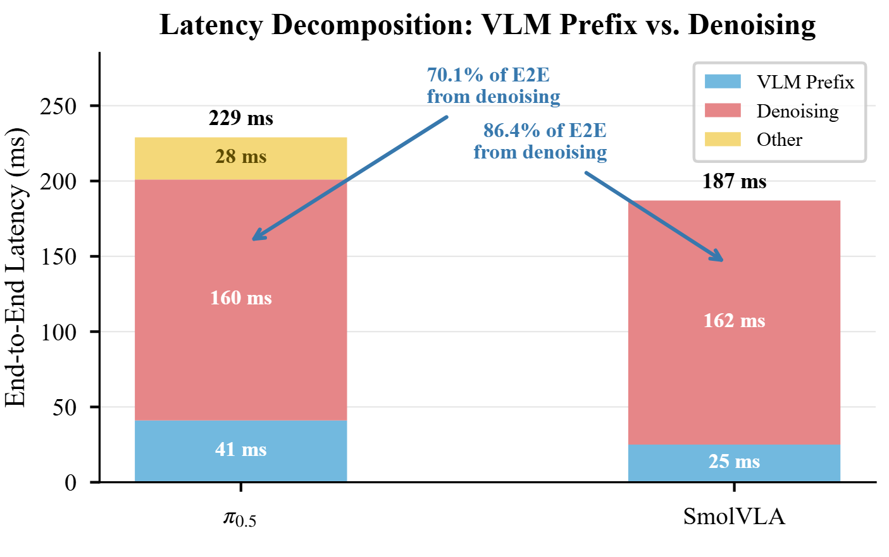
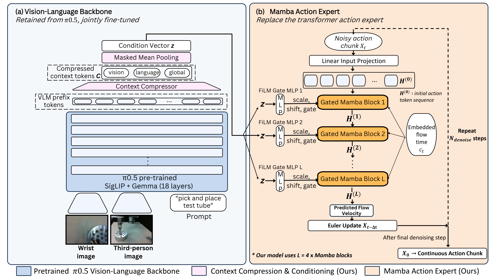
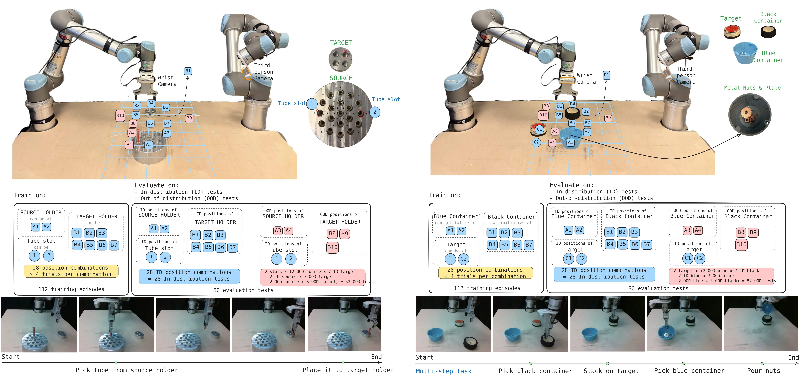

Efficient Mamba Action Experts for Flow-Matching
Vision-Language-Action Models
1MBZUAI – Mohamed bin Zayed University of Artificial Intelligence 2DTU – Technical University of Denmark
Vision-language-action (VLA) models have shown strong promise for generalist robotic manipulation, but their inference cost remains a major bottleneck for real-time control. This limitation is especially pronounced in flow-matching VLAs such as π0.5, where the action expert is evaluated repeatedly during iterative denoising. We introduce MambaAct, an efficient Mamba action expert for flow-matching VLA policies. MambaAct retains the pretrained visual-language prefix encoder of π0.5, while replacing its transformer-based action expert with a compact Mamba-based action expert. Within this expert, Mamba serves as the action mixer that models dependencies across the noisy continuous-action sequence. To preserve visual-language conditioning without repeated token-level cross-attention, MambaAct uses a lightweight Context Compressor to map Vision-language model (VLM) prefix tokens into a compact conditioning signal that gates and modulates each Mamba action block. MambaAct uses a 10× smaller action expert and reduces flow-matching denoising latency by 64.8% on LIBERO and 58.8% in real-world deployment, while improving mean LIBERO success by 1.08 percentage points across three independent fine-tuning seeds and maintaining gains on LIBERO-Plus and real-world benchmarks.
In flow-matching VLAs, the visual-language prefix is computed once per policy query, but the action expert is evaluated at every denoising step. With the standard 10 Euler steps, denoising accounts for 70.1% of end-to-end latency in π0.5 and 86.4% in SmolVLA. Iterative action generation stays the dominant cost even with a much smaller VLM, so per-step savings in the action expert accumulate across the whole denoising trajectory.

Prior efficiency work mostly reduces sampling steps, prunes or compresses the backbone, drops visual tokens, or redesigns the whole policy. MambaAct targets a complementary axis: replace the repeatedly evaluated action expert itself, while keeping the pretrained VLM and the standard flow-matching formulation, with no extra pretraining or distillation.

VLM prefix tokens are projected to the action-expert width and compressed into K = 64 context tokens: 44 visual segments and 16 language segments (masked mean pooling over contiguous blocks) plus 4 learned-query global summaries extracted with multi-head attention. A masked mean over these tokens yields a single condition vector z, which is computed once per query and reused across all denoising steps.
Four Mamba-3 blocks (width 512, state size 64) act as the sequence mixer over the action-token dimension. In each block, a FiLM gate MLP maps z to a scale, shift, and residual gate that modulate the Mamba update, replacing repeated token-level cross-attention. Flow time is injected per block. FiLM outputs are zero-initialized and the gates start at 0.2, so the new branch begins attenuated but active. The resulting expert has 29.7M parameters, compared with 311.5M for the original π0.5 action expert.
Across three independent fine-tuning seeds, MambaAct improves average success from 96.72% to 97.80% while shrinking the total model from 3.62B to 2.96B parameters. The Context Compressor adds a small prefix overhead, but denoising latency drops by 64.8%, cutting end-to-end latency by 52.9%.
| Model | Spatial | Object | Goal | L-10 | Avg. |
|---|---|---|---|---|---|
| π0.5 | 98.00 ± 0.43 | 98.33 ± 0.66 | 97.73 ± 0.84 | 92.80 ± 0.43 | 96.72 ± 0.14 |
| MambaAct | 98.73 ± 0.34 | 99.60 ± 0.43 | 98.60 ± 0.28 | 94.27 ± 1.52 | 97.80 ± 0.43 |
| Latency (ms) | ||||
|---|---|---|---|---|
| Model | Model size (B) | Prefix | Denoise | E2E |
| π0.5 | 3.62 | 40.76 | 160.26 | 228.6 |
| MambaAct | 2.96 | 46.61 | 56.40↓64.8% | 107.6↓52.9% |
Success rate (%) as mean ± std over fine-tuning seeds {17, 27, 42}, 50 trials per task. Latency measured on the seed-42 checkpoints on a single H100.
MambaAct reaches the second-highest average among recent efficient VLAs, with a 2.12× speedup over its own baseline. Its best run (seed 42) averages 98.4%. Unlike step-compression approaches such as SnapFlow, MambaAct keeps standard 10-step flow-matching inference and needs no distillation stage, so the two are complementary.
| Method | Baseline | Spatial | Object | Goal | L-10 | Avg. | Speedup |
|---|---|---|---|---|---|---|---|
| Controlled baseline | |||||||
| π0.5 | – | 98.0 | 98.3 | 97.7 | 92.8 | 96.7 | 1.00× |
| Action-expert replacement & conditioning | |||||||
| MambaAct (Ours) | π0.5 | 98.7 | 99.6 | 98.6 | 94.3 | 97.8 | 2.12× |
| Denoising-step compression | |||||||
| SnapFlow | π0.5 | 99.0 | 100.0 | 99.0 | 97.0 | 98.8 | 3.30× |
| VLM / action-head depth distillation | |||||||
| Shallow-π (π0.5-L9) | π0.5 | 99.0 | 98.0 | 97.0 | 93.0 | 97.0 | 1.72× |
| Structural layer pruning | |||||||
| π0-CLP | π0 | 95.0 | 99.2 | 95.0 | 86.4 | 93.9 | 1.39× |
| GR00T-N1.5-CLP | GR00T-N1.5 | 89.4 | 98.8 | 95.8 | 88.6 | 93.0 | 1.42× |
| Visual-token pruning | |||||||
| LightVLA | OpenVLA-OFT | 98.4 | 98.4 | 98.2 | 94.6 | 97.4 | n/a |
| ADP | OpenVLA-OFT | 97.6 | 98.4 | 97.4 | 84.2 | 94.4 | 1.35× |
| π0-SpecPrune-VLA | π0 | 96.6 | 98.0 | 95.2 | 84.2 | 93.5 | 1.31× |
| FastV | OpenVLA-OFT | 94.6 | 95.8 | 94.0 | 88.8 | 93.3 | 1.44× |
| DivPrune | OpenVLA-OFT | 92.4 | 91.2 | 89.0 | 84.8 | 89.4 | 1.46× |
| Routing and sparsification | |||||||
| CogVLA | OpenVLA | 99.0 | 99.0 | 97.0 | 95.0 | 97.0 | n/a |
| Hybrid multi-axis acceleration | |||||||
| EfficientVLA | OpenVLA-OFT | 96.5 | 91.1 | 96.0 | 72.1 | 88.9 | 1.52× |
| Compact or alternative architectures | |||||||
| SUREFlow | Compact Mamba | 94.8 | 91.0 | 93.8 | 90.2 | 92.5 | n/a |
| SmolVLA | Compact VLA | 90.0 | 96.0 | 92.0 | 71.0 | 87.3 | n/a |
| OpenVLA | Autoregressive | 84.9 | 88.4 | 79.2 | 53.7 | 76.6 | n/a |
Speedup is relative to each method's own baseline. π0.5 and MambaAct are means over three fine-tuning seeds; other results are from the cited works.
On LIBERO-Plus (10,030 perturbed test instances across seven categories), MambaAct achieves the highest overall score at 79.7%. The largest gain is under robot initial-pose variation (70.9% → 77.6%), and it also posts the best lighting score. The main drop is under observation noise. Strong standard-LIBERO performance does not come at the cost of robustness.
| Method | Camera | Robot | Language | Light | Backgr. | Noise | Layout | Total |
|---|---|---|---|---|---|---|---|---|
| OpenVLA | 0.8 | 3.5 | 23.0 | 8.1 | 34.8 | 15.2 | 28.5 | 15.6 |
| OpenVLA-OFT | 56.4 | 31.9 | 79.5 | 88.7 | 93.3 | 75.8 | 74.2 | 69.6 |
| OpenVLA-OFTw | 10.4 | 38.7 | 70.5 | 76.8 | 93.6 | 49.9 | 69.9 | 55.8 |
| OpenVLA-OFTm | 55.6 | 21.7 | 81.0 | 92.7 | 91.0 | 78.6 | 68.7 | 67.9 |
| NORA | 2.2 | 37.0 | 65.1 | 45.7 | 58.6 | 12.8 | 62.1 | 39.0 |
| WorldVLA | 0.1 | 27.9 | 41.6 | 43.7 | 17.1 | 10.9 | 38.0 | 25.0 |
| UniVLA | 1.8 | 46.2 | 69.6 | 69.0 | 81.0 | 21.2 | 31.9 | 42.9 |
| π0 | 13.8 | 6.0 | 58.8 | 85.0 | 81.4 | 79.0 | 68.9 | 53.6 |
| π0-Fast | 65.1 | 21.6 | 61.0 | 73.2 | 73.2 | 74.4 | 68.8 | 61.6 |
| RIPT-VLA | 55.2 | 31.2 | 77.6 | 88.4 | 91.6 | 73.5 | 74.2 | 68.4 |
| π0.5 | 61.6 | 70.9 | 76.4 | 94.9 | 92.7 | 77.4 | 86.4 | 78.7 |
| MambaAct (Ours) | 61.5 | 77.6 | 79.8 | 95.2 | 93.2 | 73.5 | 86.4 | 79.7 |
All models are trained on standard LIBERO and evaluated without LIBERO-Plus fine-tuning. Published rows are from the LIBERO-Plus paper; π0.5 and MambaAct use our matched protocol.

Both models reach 100% ID success; the difference shows up out of distribution. MambaAct improves OOD success from 86.5% to 95.2% on nut pouring and from 76.9% to 82.7% on tube placing, while denoising latency drops by 58.8% and end-to-end latency by about 33%.
| Latency (ms) | Success rate (%) | ||||||
|---|---|---|---|---|---|---|---|
| Task | Model | Prefix | Denoise | E2E | ID | OOD | Final |
| Nut pouring | π0.5 | 39.45 | 74.82 | 125.49 | 100.0 | 86.5 | 91.3 |
| Nut pouring | MambaAct | 41.03 | 30.84↓58.8% | 82.97↓33.9% | 100.0 | 95.2 | 96.9 |
| Tube placing | π0.5 | 39.12 | 75.42 | 124.84 | 100.0 | 76.9 | 85.0 |
| Tube placing | MambaAct | 41.15 | 31.11↓58.8% | 83.26↓33.3% | 100.0 | 82.7 | 88.8 |
Inference on an RTX 5090. Model size 3.62B → 2.96B (↓18.2%), GFLOPs 5001.2 → 4488.8 (↓10.2%). Success uses partial credit for meaningful intermediate completion.
A 2×2 comparison of action mixers and conditioning interfaces shows that Mamba substantially outperforms a size-matched Transformer under both gated (98.4% vs. 85.7%) and cross-attention (96.7% vs. 75.6%) conditioning. Gated FiLM conditioning is also faster than cross-attention, although its accuracy edge is partly confounded by the larger gated expert.
| Mixer | Conditioning | Spatial | Object | Goal | L-10 | Avg. | Size (B) | Latency (ms) |
|---|---|---|---|---|---|---|---|---|
| Mamba | Gate | 99.2 | 99.8 | 98.8 | 95.8 | 98.4 | 0.030 | 107.61 |
| Mamba | Cross-Attn | 98.6 | 99.4 | 94.6 | 94.2 | 96.7 | 0.017 | 119.66 |
| Transformer | Gate | 82.8 | 90.6 | 86.8 | 82.6 | 85.7 | 0.030 | 74.22 |
| Transformer | Cross-Attn | 75.2 | 82.8 | 75.8 | 68.6 | 75.6 | 0.018 | 85.60 |
All variants share the same Context Compressor. Size reports the action-expert core.
Running only the first 12 of 18 VLM layers (MambaAct L12) keeps 97.5% average LIBERO success and cuts training time from 13.78 to 10.81 hours. On the real robot it shrinks the model to 2.30B parameters and lowers latency from 83 to 74 ms, while keeping 100% ID success and reaching 95.0% (nut pouring) and 90.0% (tube placing) final success.
| LIBERO success (%) | Latency (ms) | ||||||||
|---|---|---|---|---|---|---|---|---|---|
| Model | Spatial | Object | Goal | L-10 | Avg. | Train (h) | Prefix | Denoise | E2E |
| MambaAct | 99.2 | 99.8 | 98.8 | 95.8 | 98.4 | 13.78 | 46.61 | 56.40 | 107.6 |
| MambaAct L12 | 98.0 | 99.8 | 98.0 | 94.0 | 97.5 | 10.81 | 41.15 | 56.06 | 102.91 |
Replacing SmolVLA's Transformer action expert with a 4-block Mamba expert shrinks it from 98.25M to 64.31M parameters. Under the same training budget, average LIBERO success rises from 81.30% to 84.95%, and end-to-end latency falls by 52.0%. The largest gains are on LIBERO-10 (70.2% → 77.8%).
| LIBERO success (%) | Latency (ms) | ||||||||
|---|---|---|---|---|---|---|---|---|---|
| Model | Spatial | Object | Goal | L-10 | Avg. | Prefix | Denoise | E2E | Expert (M) |
| Released SmolVLA | 76.6 | 93.0 | 85.4 | 70.2 | 81.30 | 25.53 | 163.15 | 188.69 | 98.25 |
| SmolVLA-MambaAct | 82.6 | 92.4 | 87.0 | 77.8 | 84.95 | 30.69 | 59.89 | 90.61 | 64.31 |
50 trials per task, evaluation seed 7, native action horizon H = 50, 10 denoising steps. Latency on a single H100.
@article{pham2026mambaact,
title = {MambaAct: Efficient Mamba Action Experts for
Flow-Matching Vision-Language-Action Models},
author = {Pham, Khuyen and Le, Tran Nguyen and
Fazzari, Edoardo and Stefanini, Cesare},
journal = {arXiv preprint arXiv:2610.22951},
year = {2026}
}